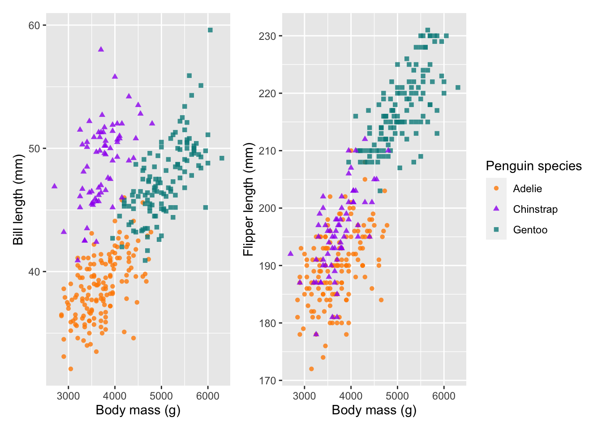
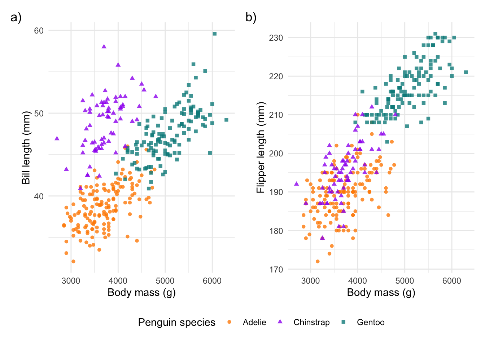

Data visualisation
Part 1: Building a ggplot()
In Part 1, we will work on building one good, publication ready figure.
Install the required packages. Each package has a comment next to it with a brief reason why we’re using it.
#### Install packages ----
install.packages('tidyverse') # dplyr and ggplot2
install.packages('janitor') # cleaning names
install.packages('lubridate') # extracting dates
install.packages('stringr') # extracting strings
install.packages('patchwork') # combining plots
install.packages('palmerpenguins') # the penguin data!Load your libraries:
#### Load libraries ----
library(tidyverse)
library(janitor)
library(lubridate)
library(stringr)
library(patchwork)
library(palmerpenguins)Explore the data
The penguin package has a great collection of data, in both raw and processed formats. Let’s take a look at it:
#### Load data ----
data(package = 'palmerpenguins')First let’s explore the raw data:
#### Explore data ----
penguins_raw <- palmerpenguins::penguins_raw
str(penguins_raw)## tibble [344 × 17] (S3: tbl_df/tbl/data.frame)
## $ studyName : chr [1:344] "PAL0708" "PAL0708" "PAL0708" "PAL0708" ...
## $ Sample Number : num [1:344] 1 2 3 4 5 6 7 8 9 10 ...
## $ Species : chr [1:344] "Adelie Penguin (Pygoscelis adeliae)" "Adelie Penguin (Pygoscelis adeliae)" "Adelie Penguin (Pygoscelis adeliae)" "Adelie Penguin (Pygoscelis adeliae)" ...
## $ Region : chr [1:344] "Anvers" "Anvers" "Anvers" "Anvers" ...
## $ Island : chr [1:344] "Torgersen" "Torgersen" "Torgersen" "Torgersen" ...
## $ Stage : chr [1:344] "Adult, 1 Egg Stage" "Adult, 1 Egg Stage" "Adult, 1 Egg Stage" "Adult, 1 Egg Stage" ...
## $ Individual ID : chr [1:344] "N1A1" "N1A2" "N2A1" "N2A2" ...
## $ Clutch Completion : chr [1:344] "Yes" "Yes" "Yes" "Yes" ...
## $ Date Egg : Date[1:344], format: "2007-11-11" "2007-11-11" ...
## $ Culmen Length (mm) : num [1:344] 39.1 39.5 40.3 NA 36.7 39.3 38.9 39.2 34.1 42 ...
## $ Culmen Depth (mm) : num [1:344] 18.7 17.4 18 NA 19.3 20.6 17.8 19.6 18.1 20.2 ...
## $ Flipper Length (mm): num [1:344] 181 186 195 NA 193 190 181 195 193 190 ...
## $ Body Mass (g) : num [1:344] 3750 3800 3250 NA 3450 ...
## $ Sex : chr [1:344] "MALE" "FEMALE" "FEMALE" NA ...
## $ Delta 15 N (o/oo) : num [1:344] NA 8.95 8.37 NA 8.77 ...
## $ Delta 13 C (o/oo) : num [1:344] NA -24.7 -25.3 NA -25.3 ...
## $ Comments : chr [1:344] "Not enough blood for isotopes." NA NA "Adult not sampled." ...
## - attr(*, "spec")=
## .. cols(
## .. studyName = col_character(),
## .. `Sample Number` = col_double(),
## .. Species = col_character(),
## .. Region = col_character(),
## .. Island = col_character(),
## .. Stage = col_character(),
## .. `Individual ID` = col_character(),
## .. `Clutch Completion` = col_character(),
## .. `Date Egg` = col_date(format = ""),
## .. `Culmen Length (mm)` = col_double(),
## .. `Culmen Depth (mm)` = col_double(),
## .. `Flipper Length (mm)` = col_double(),
## .. `Body Mass (g)` = col_double(),
## .. Sex = col_character(),
## .. `Delta 15 N (o/oo)` = col_double(),
## .. `Delta 13 C (o/oo)` = col_double(),
## .. Comments = col_character()
## .. )Second, take a look at the processed data:
penguins <- palmerpenguins::penguins
str(penguins)## tibble [344 × 8] (S3: tbl_df/tbl/data.frame)
## $ species : Factor w/ 3 levels "Adelie","Chinstrap",..: 1 1 1 1 1 1 1 1 1 1 ...
## $ island : Factor w/ 3 levels "Biscoe","Dream",..: 3 3 3 3 3 3 3 3 3 3 ...
## $ bill_length_mm : num [1:344] 39.1 39.5 40.3 NA 36.7 39.3 38.9 39.2 34.1 42 ...
## $ bill_depth_mm : num [1:344] 18.7 17.4 18 NA 19.3 20.6 17.8 19.6 18.1 20.2 ...
## $ flipper_length_mm: int [1:344] 181 186 195 NA 193 190 181 195 193 190 ...
## $ body_mass_g : int [1:344] 3750 3800 3250 NA 3450 3650 3625 4675 3475 4250 ...
## $ sex : Factor w/ 2 levels "female","male": 2 1 1 NA 1 2 1 2 NA NA ...
## $ year : int [1:344] 2007 2007 2007 2007 2007 2007 2007 2007 2007 2007 ...Wrangle the data
We will start working on the raw data and process it so that it looks just like the clean.
Start by using the janitor::clean_names() function to
remove any spaces in the column names.
#### Wrangle data ----
# clean the column names
penguins_clean_1 <- clean_names(penguins_raw)
names(penguins_clean_1)## [1] "study_name" "sample_number" "species"
## [4] "region" "island" "stage"
## [7] "individual_id" "clutch_completion" "date_egg"
## [10] "culmen_length_mm" "culmen_depth_mm" "flipper_length_mm"
## [13] "body_mass_g" "sex" "delta_15_n_o_oo"
## [16] "delta_13_c_o_oo" "comments"We then select the columns that we’d like to work with. In the
dplyr package, we have previously used the
rename() function. However, we can use
select() to both select the columns of interest and rename
the columns.
Here we rename the columns with culmen to bill and change the date column to year.
# select columns to work on & clean names
names(penguins_clean_1)## [1] "study_name" "sample_number" "species"
## [4] "region" "island" "stage"
## [7] "individual_id" "clutch_completion" "date_egg"
## [10] "culmen_length_mm" "culmen_depth_mm" "flipper_length_mm"
## [13] "body_mass_g" "sex" "delta_15_n_o_oo"
## [16] "delta_13_c_o_oo" "comments"penguins_clean_1 %>% select(species, island, bill_length_mm = culmen_length_mm,
bill_depth_mm = culmen_depth_mm, flipper_length_mm,
body_mass_g, sex, year = date_egg) -> penguins_clean_2The date column was previously stored as string. Let’s extract only
the year using the lubridate::year() function.
# select only year from dates
penguins_clean_2$year <- year(penguins_clean_2$year)We’re getting close to the processed data. Take another look at the data structures:
# check that they are the same
str(penguins)## tibble [344 × 8] (S3: tbl_df/tbl/data.frame)
## $ species : Factor w/ 3 levels "Adelie","Chinstrap",..: 1 1 1 1 1 1 1 1 1 1 ...
## $ island : Factor w/ 3 levels "Biscoe","Dream",..: 3 3 3 3 3 3 3 3 3 3 ...
## $ bill_length_mm : num [1:344] 39.1 39.5 40.3 NA 36.7 39.3 38.9 39.2 34.1 42 ...
## $ bill_depth_mm : num [1:344] 18.7 17.4 18 NA 19.3 20.6 17.8 19.6 18.1 20.2 ...
## $ flipper_length_mm: int [1:344] 181 186 195 NA 193 190 181 195 193 190 ...
## $ body_mass_g : int [1:344] 3750 3800 3250 NA 3450 3650 3625 4675 3475 4250 ...
## $ sex : Factor w/ 2 levels "female","male": 2 1 1 NA 1 2 1 2 NA NA ...
## $ year : int [1:344] 2007 2007 2007 2007 2007 2007 2007 2007 2007 2007 ...str(penguins_clean_2)## tibble [344 × 8] (S3: tbl_df/tbl/data.frame)
## $ species : chr [1:344] "Adelie Penguin (Pygoscelis adeliae)" "Adelie Penguin (Pygoscelis adeliae)" "Adelie Penguin (Pygoscelis adeliae)" "Adelie Penguin (Pygoscelis adeliae)" ...
## $ island : chr [1:344] "Torgersen" "Torgersen" "Torgersen" "Torgersen" ...
## $ bill_length_mm : num [1:344] 39.1 39.5 40.3 NA 36.7 39.3 38.9 39.2 34.1 42 ...
## $ bill_depth_mm : num [1:344] 18.7 17.4 18 NA 19.3 20.6 17.8 19.6 18.1 20.2 ...
## $ flipper_length_mm: num [1:344] 181 186 195 NA 193 190 181 195 193 190 ...
## $ body_mass_g : num [1:344] 3750 3800 3250 NA 3450 ...
## $ sex : chr [1:344] "MALE" "FEMALE" "FEMALE" NA ...
## $ year : num [1:344] 2007 2007 2007 2007 2007 ...
## - attr(*, "spec")=
## .. cols(
## .. studyName = col_character(),
## .. `Sample Number` = col_double(),
## .. Species = col_character(),
## .. Region = col_character(),
## .. Island = col_character(),
## .. Stage = col_character(),
## .. `Individual ID` = col_character(),
## .. `Clutch Completion` = col_character(),
## .. `Date Egg` = col_date(format = ""),
## .. `Culmen Length (mm)` = col_double(),
## .. `Culmen Depth (mm)` = col_double(),
## .. `Flipper Length (mm)` = col_double(),
## .. `Body Mass (g)` = col_double(),
## .. Sex = col_character(),
## .. `Delta 15 N (o/oo)` = col_double(),
## .. `Delta 13 C (o/oo)` = col_double(),
## .. Comments = col_character()
## .. )To clean the species column, we need to select only the first word
from the string. To do this, we use the stringr::word()
function and specify the 1st word. We also wrap this in the
as.factor() function to convert the column from character
to factor.
# select only first name from species list and convert to factor
penguins_clean_2$species <- as.factor(word(penguins_clean_2$species, 1))Lastly, let’s convert the sex column values to lower case
using the base R function tolower(). Again, convert this to
a factor.
# change sex to lower case
penguins_clean_2$sex <- as.factor(tolower((penguins_clean_2$sex)))And then a final check. Save the cleaned data over the processed data that we loaded in earlier.
# final check
str(penguins_clean_2)## tibble [344 × 8] (S3: tbl_df/tbl/data.frame)
## $ species : Factor w/ 3 levels "Adelie","Chinstrap",..: 1 1 1 1 1 1 1 1 1 1 ...
## $ island : chr [1:344] "Torgersen" "Torgersen" "Torgersen" "Torgersen" ...
## $ bill_length_mm : num [1:344] 39.1 39.5 40.3 NA 36.7 39.3 38.9 39.2 34.1 42 ...
## $ bill_depth_mm : num [1:344] 18.7 17.4 18 NA 19.3 20.6 17.8 19.6 18.1 20.2 ...
## $ flipper_length_mm: num [1:344] 181 186 195 NA 193 190 181 195 193 190 ...
## $ body_mass_g : num [1:344] 3750 3800 3250 NA 3450 ...
## $ sex : Factor w/ 2 levels "female","male": 2 1 1 NA 1 2 1 2 NA NA ...
## $ year : num [1:344] 2007 2007 2007 2007 2007 ...
## - attr(*, "spec")=
## .. cols(
## .. studyName = col_character(),
## .. `Sample Number` = col_double(),
## .. Species = col_character(),
## .. Region = col_character(),
## .. Island = col_character(),
## .. Stage = col_character(),
## .. `Individual ID` = col_character(),
## .. `Clutch Completion` = col_character(),
## .. `Date Egg` = col_date(format = ""),
## .. `Culmen Length (mm)` = col_double(),
## .. `Culmen Depth (mm)` = col_double(),
## .. `Flipper Length (mm)` = col_double(),
## .. `Body Mass (g)` = col_double(),
## .. Sex = col_character(),
## .. `Delta 15 N (o/oo)` = col_double(),
## .. `Delta 13 C (o/oo)` = col_double(),
## .. Comments = col_character()
## .. )penguins <- penguins_clean_2Data visualisation
Now that our data is cleaned, we can begin plotting. Let’s first look
at the broad relationships between all of the variables in our data. We
can simply use the base R plot() to explore all of the
correlations in our data.
#### Data visualisation ----
# correlation plot with all variables
plot(penguins)
From this plot, we can see that body mass and bill length look strongly correlated. Let’s use these two variables to build a plot.
In this workshop, we will be using the ggplot2 package
for most of our data visualisation. There are several different
R and non-R options for plotting data, so why chose
ggplot2?
- It is like building lego blocks (each geom is a layer)
- The syntax is relatively simple
- Easy use of themes & colour palettes
- Wide adoption (so easy to find similar queries online)
- Facets! (easily produce several subplots based on a factor)
- Combine plots seamlessly (there are several packages for this, but
we’ll explore
patchwork. Also look upcowplotor theeggpackage) gganimate(): easily turn your plot into an animation (we don’t explore this function here, but take a look at the great examples!)ggplot2is a part of thetidyversegroup of R packages. This means that it is well integrated with some of the other packages we have learnt so far, likedplyr.
Ok, those are a few reasons. However, always do what’s easiest for
youm whether it’s using base R functions, excel charts,
plotnine/seaborn/matplotlib in Python or whatever else.
ggplot2 is just one of these options and the most important
thing is to get the job done.
The primary function we will use is ggplot() (don’t
forget to remove the 2!). The core template used in ggplot2
graphics requires the data.frame, the variables of interest
and the type of plot you want. This is the template:
ggplot(data = DATA, mapping = aes(VARIABLES OF INTEREST)) + geom_()
ggplot2 works similarly to dplyr’s
%>% (pipe) function, but instead we use a +
to add on additional functions. Find the ggplot2 cheatsheet
HERE.
Let’s get started by first selecting the dataset we want to work with:
# chose the data
ggplot(data = penguins)
This doesn’t show us anything, because we have not yet chosen our
variables. We then chose our variables of interest and place them inside
our mapping aesthetics. Here we want body_mass_g on the
x-axis and bill_length_g on the y-axis.
# add in mapping aesthetics
ggplot(data = penguins, mapping = aes(x = body_mass_g, y = bill_length_mm))
Basic plot
Our axis are set up! Let’s now fill the plot by choosing a
geom_() function, short for geometry. We
will use geom_point(), which plots a scatterplot.
# chose a geometry to plot
ggplot(data = penguins, mapping = aes(x = body_mass_g, y = bill_length_mm)) +
geom_point()
There’s your first ggplot()! However, there are several
options to start customising it to our liking, so let’s explore those.
Another option, is the place the data = and
mapping = arguments within the geom_().
# add the data and mapping arguments to the geom
ggplot() +
geom_point(data = penguins, mapping = aes(x = body_mass_g, y = bill_length_mm))We can also do a mix of the two, as shown below. Note that if our
arguments are in the correct place, we can also remove the calls to
data = and mapping =. This helps to shorten
and clean up our code:
# keep the data in ggplot() and mapping aesthetics in the geom_
ggplot(penguins) +
geom_point(aes(body_mass_g, bill_length_mm))
Add in colour
Let’s now add a 3rd variable species as the
colour using col =.
# add in a 3rd variable as colour
ggplot(penguins) +
geom_point(aes(body_mass_g, bill_length_mm, col = species))Add in shape
Notice that ggplot() automatically adds in a legend! We
can double up, and also change the shape of each point based on the
species using shape =.
# add in a 3rd variable as colour and shape
ggplot(penguins) +
geom_point(aes(body_mass_g, bill_length_mm, col = species, shape = species))Change opacity
Note that these two aesthetics are placed within the same mapping
aesthetics as the x and the y variables. This is very
important. If we placed them outside of the aes()
call, it would not work. Anything outside of the aes() call
will be applied to all points! See the example below on changing the
opacity using alpha =. Changing the opacity helps to show
points, which may be overlapping with others.
# change the opacity of the points
ggplot(penguins) +
geom_point(aes(body_mass_g, bill_length_mm, col = species, shape = species), alpha = 0.8)
Change the colours
Let’s further customise our plot by changing the default colours to those we would like to use. To select colours, we can specify colour names (e.g. ‘blue’) or use a hex colour code. See a list of the colour names found in R HERE. There are several useful tools to select hex colour codes, HERE is one example.
To change the colours we use the scale_ functions.
Importantly, scale_ can be used for many purposes,
including changing axes limits or breaks or transforming your axes. We
will use it to change the shape and colours of our plots.
If you are using the col = in your geom_,
then we need to use scale_colour_ in our
scale_ function. The same applies to shape =
and fill = (which we will use later…). The last part of our
scale_colour function is to chose whether it’s a
discrete or continuous variable. In our case, we have
a discrete variable, but instead of using
scale_colour_discrete(), we will use
scale_colour_manual(), so that we can manually select our
colour values.
We also use the labs() function to change the legend
title. If we only do this for colour, then the shape aesthetic will
still use the original title and the ggplot() will plot two
separate legends. We don’t want this, so we specify both titles, which
then combines our legends together:
# change the colour of the points and the legend name (for both scales)
# use c('darkorange', 'purple', 'cyan4')
ggplot(penguins) +
geom_point(aes(body_mass_g, bill_length_mm, col = species, shape = species), alpha = 0.8) +
scale_colour_manual(values = c('darkorange', 'purple', 'cyan4')) +
labs(colour = 'Penguin species', shape = 'Penguin species')Change the labels
In our labs() function, we can also add in our x- and
y-axes labels:
# change the labels of the x and y axes
ggplot(penguins) +
geom_point(aes(body_mass_g, bill_length_mm, col = species, shape = species), alpha = 0.8) +
scale_colour_manual(values = c('darkorange', 'purple', 'cyan4')) +
labs(x = 'Body mass (g)', y = 'Bill length (mm)',
colour = 'Penguin species', shape = 'Penguin species') Change the axes
As mentioned before, scale_ can also be used to change
our axes limits and breaks. If you have a discrete x-axis, you would use
scale_x_discrete(), but in this case both of our axes are
continuous, so we use scale_x_continuous(). Here is an
example, which changes our limits using lower- and upper-bounds
(i.e. the zoom-level) and our breaks (i.e. what tick marks would you
like).
# change the limits and breaks of the x and y axes
ggplot(penguins) +
geom_point(aes(body_mass_g, bill_length_mm, col = species, shape = species), alpha = 0.8) +
scale_colour_manual(values = c('darkorange', 'purple', 'cyan4')) +
labs(x = 'Body mass (g)', y = 'Bill length (mm)',
colour = 'Penguin species', shape = 'Penguin species') +
scale_x_continuous(limits = c(2500, 6500), breaks = seq(2500,6500,1000)) +
scale_y_continuous(limits = c(30,60), breaks = c(30,40,50,60))Themes
One of my favourite features of ggplot2, is the easily
editable themes. There are several built-in themes, which can quickly
convert your plots into clean designs. All themes can be use with the
basic call to theme_. Here will use the minimal theme
theme_minimal().
# change the default theme
ggplot(penguins) +
geom_point(aes(body_mass_g, bill_length_mm, col = species, shape = species), alpha = 0.8) +
scale_colour_manual(values = c('darkorange', 'purple', 'cyan4')) +
labs(x = 'Body mass (g)', y = 'Bill length (mm)',
colour = 'Penguin species', shape = 'Penguin species') +
theme_minimal() 
Legend position
We can also edit where we put the legend. We change this (as well as
many other customisable options) in the theme() function.
We have a few default options for the legend, which include
"top","bottom","left" and
"right". However, we can also specify the position
inside the plot using a values for the x- and y-axes,
respectively. These values fall between 0 and 1.
# change the legend position
# ?theme
ggplot(penguins) +
geom_point(aes(body_mass_g, bill_length_mm, col = species, shape = species), alpha = 0.8) +
scale_colour_manual(values = c('darkorange', 'purple', 'cyan4')) +
labs(x = 'Body mass (g)', y = 'Bill length (mm)',
colour = 'Penguin species', shape = 'Penguin species') +
theme_minimal() +
theme(legend.position = c(0.8,0.2))In my books, this is a complete and ready to publish figure! We could
save it to file at this point. But before we do that, let’s explore a
few more ggplot2 fundamentals.
Facets
One of the powerful features of ggplot2 is the ability
to facet a plot by one of your discrete variables (i.e. factors). This
means we can use the same plot recipe as used above, but adding just one
more line of code, we can split it up into several subplots using the
facet_grid() or facet_wrap() functions. Here,
we split our plot into two subplots by sex and stack them
next to each other using cols = vars(sex). If we want them
on top of one another, we would use rows =.
We can also tweak the theme by using theme_bw(), which
works nicely with facets.
#### Facets ----
ggplot(penguins %>% drop_na()) +
geom_point(aes(body_mass_g, bill_length_mm, col = species, shape = species), alpha = 0.8) +
scale_colour_manual(values = c('darkorange', 'purple', 'cyan4')) +
labs(x = 'Body mass (g)', y = 'Bill length (mm)',
colour = 'Penguin species', shape = 'Penguin species') +
theme_bw() +
facet_grid(cols = vars(sex))Combine plots
So facets can help us visualise several subplots based on a factor, but what if we want to plot two completely separate plots next to one another?
There are several packages which could help us here, but let’s
explore a more recent and extremely useful one called
patchwork. patchwork uses a basic syntax to
combine plots together.
- To add plots as columns use
+ - To add plots as rows use
/
There is a huge variety of ways to patch plots together, so take a look at the patchwork website.
We will create a new plot (body mass versus flipper length) and save
each plot to an object (plot1 and plot2).
#### Patchwork ----
plot1 <- ggplot(penguins) +
geom_point(aes(body_mass_g, bill_length_mm, col = species, shape = species), alpha = 0.8) +
scale_colour_manual(values = c('darkorange', 'purple', 'cyan4')) +
labs(x = 'Body mass (g)', y = 'Bill length (mm)',
colour = 'Penguin species', shape = 'Penguin species')
plot2 <- ggplot(penguins) +
geom_point(aes(body_mass_g, flipper_length_mm, col = species, shape = species), alpha = 0.8) +
scale_colour_manual(values = c('darkorange', 'purple', 'cyan4')) +
labs(x = 'Body mass (g)', y = 'Flipper length (mm)',
colour = 'Penguin species', shape = 'Penguin species')
# combine plots (cols and rows)
plot1 + plot2 # colsplot1 / plot2 # rowsWe can then save our two patched together plots as a new object
combined_plot.
combined_plot <- plot1 + plot2
combined_plot
patchwork also offers some really valuable annotation
and layout control options. For example, we can add plot annotations to
give them clear labels:
# add annotation
combined_plot + plot_annotation(tag_levels = 'a', tag_suffix = ')')Seeing as our plots have the same legend, we can also combine these together:
# control the guides
combined_plot + plot_layout(guides = 'collect')
A really useful helper, is to apply a theme to all of the plots. Note
that we are now using & instead of +. This
is because if we were to use + it would only change the
theme for our last plot. & makes sure this applies to
both/all plots:
# add theme style to all plots
combined_plot &
theme_minimal() &
theme(legend.position = 'bottom')And now we can finally bring all of the patchwork edits together:
# bring it all together
combined_plot +
plot_annotation(tag_levels = 'a', tag_suffix = ')') +
plot_layout(guides = 'collect') &
theme_minimal() &
theme(legend.position = 'bottom')
Save your ggplot
Now that we have our publication ready plot(s), we can save our ggplot!
This requires the ggsave() function.
ggsave() will automatically save the last plot we have
plotted in our plot window. This means we just need to specify the file
directory and the device (i.e. what type of output would you like).
However, there are some valuable additions to this function. For
example, if we use .png, we may want to specify the
background colour using bg =. Importantly, we can also
choose our plot dimensions. This is crucial if you are creating plots
for a publication, where many journals have size and format
requirements! Change the units to mm using units = 'mm' and
then chose your width and height.
#### Save your plot ----
# using ggsave()
ggsave("output/figs/peng_mass_bill_flipper_length.png", device = 'png', bg = 'white',
width = 120, height = 80, units = 'mm', dpi = 320)Part 2: Different geometries
In Part 2, we will explore the range of different plots available in
ggplot2. We have already looked at a type of correlation
plot using geom_point() (i.e. scatterplots). In this
section, we will explore a range of distribution plots (boxplots,
histograms and density plots) and ranking plots (barplots and lollipop
plots). There are many more ways to plot your data and the r-graph-gallery or
following the #TidyTuesday
challenge on Twitter are good places to look for inspiration.
Again, we start by installing & loading our packages:
#### Install packages ----
install.packages('tidyverse') # for dplyr and ggplot2
install.packages('palmerpenguins') # our penguin data!
install.packages('ggrepel') # for repelled text labels
install.packages('ggridges') # for interesting density plots
install.packages('ggdist') # for more detailed distribution plots#### Load libraries ----
library(tidyverse)
library(palmerpenguins)
library(ggrepel)
library(ggridges)
library(ggdist)We will use the pre-processed penguin data this time:
#### Explore data ----
penguins <- palmerpenguins::penguins
str(penguins)## tibble [344 × 8] (S3: tbl_df/tbl/data.frame)
## $ species : Factor w/ 3 levels "Adelie","Chinstrap",..: 1 1 1 1 1 1 1 1 1 1 ...
## $ island : Factor w/ 3 levels "Biscoe","Dream",..: 3 3 3 3 3 3 3 3 3 3 ...
## $ bill_length_mm : num [1:344] 39.1 39.5 40.3 NA 36.7 39.3 38.9 39.2 34.1 42 ...
## $ bill_depth_mm : num [1:344] 18.7 17.4 18 NA 19.3 20.6 17.8 19.6 18.1 20.2 ...
## $ flipper_length_mm: int [1:344] 181 186 195 NA 193 190 181 195 193 190 ...
## $ body_mass_g : int [1:344] 3750 3800 3250 NA 3450 3650 3625 4675 3475 4250 ...
## $ sex : Factor w/ 2 levels "female","male": 2 1 1 NA 1 2 1 2 NA NA ...
## $ year : int [1:344] 2007 2007 2007 2007 2007 2007 2007 2007 2007 2007 ...Line charts
Using the same plot as before, let’s now add linear trendlines to
each of our species. Notice that we have used the function
drop_na() to remove any NA values in our
penguin data. To add our trendlines, we use geom_smooth().
The default method = for geom_smooth() is
loess, which provides a smoothed loess curve to each
species. To change this, we select method = 'lm':
#### Line charts ----
ggplot(data = drop_na(penguins), aes(body_mass_g, bill_length_mm, col = species, shape = species)) +
geom_point(alpha = 0.8) +
scale_colour_manual(values = c('darkorange', 'purple', 'cyan4'),name = 'Penguin species') +
scale_shape(name = 'Penguin species') +
geom_smooth(method = 'lm') +
labs(x = 'Body mass (g)', y = 'Bill length (mm)') +
theme_bw() Barplots
A plot type you’ll all be familiar with is a barplot. A barplot
requires summarised data. So let’s do some quick data manipulation.
First, group_by(species) and then summarise
flipper_length_mm by mean() and
sd(). Notice we use na.rm = TRUE to remove the
2 rows with missing data.
We can then %>% (pipe) our summarised dataset
directly into a ggplot()! To produce a barplot, we use
geom_col() and we add our errorbars (SD) by providing an
x value, as well as a ymax and
ymin value. We need to calculate these on the fly, so we
take the flipper_mean and then + or
- the flipper_sd values, respectively. It’s
worth adjusting the width = of the errorbars to produce a
more pleasing appearance:
#### Barplot with SD ----
penguins %>%
group_by(species) %>%
summarise(flipper_mean = mean(flipper_length_mm, na.rm = T),
flipper_sd = sd(flipper_length_mm, na.rm = T)) %>%
ggplot() +
geom_col(aes(x = species, y = flipper_mean),
fill = c('darkorange','purple','cyan4')) +
geom_errorbar(aes(x = species, ymax = flipper_mean + flipper_sd,
ymin = flipper_mean - flipper_sd), width = 0.5) +
labs(x = "Penguin species", y = 'Flipper length (mm)') +
theme_minimal()
Barplots aren’t great. They tend to hide the underlying distribution of the data, which is what most people are actually interested in. The only time you should use them is when you only have a single value for each variable (i.e. no variability). But even then, there are far more interesting options (HERE and HERE). Read more about why to avoid them HERE.
Boxplots
We do have variation in our data, so let’s look at better alternatives. First, we have the classic box-and-whisker plots. These start to give us a better idea of our distribution:
#### Boxplot ----
ggplot(penguins) +
geom_boxplot(aes(x = species, y = flipper_length_mm),
col = c('darkorange','purple','cyan4')) +
labs(x = "Penguin species", y = 'Flipper length (mm)') +
theme_minimal() 
Histograms
We’re still not quite there. Histograms are an excellent tool to show
us the distribution of our data clearly. In the
geom_histogram() geom, select
position = 'identity and alpha = 0.6 to avoid
stacked frequency bars and to make overlaps more obvious:
#### Histograms ----
ggplot(penguins) +
geom_histogram(aes(x = flipper_length_mm, fill = species), position = 'identity', alpha = 0.6) +
scale_fill_manual(values = c('darkorange','purple','cyan4')) +
labs(x = 'Flipper length (mm)', y = 'Frequency') +
theme_minimal()Density plots
We could also use density plots, which essentially show a smoothed histogram output:
#### Density ----
ggplot(penguins) +
geom_density(aes(x = flipper_length_mm, fill = species), col = NA, alpha = 0.6) +
scale_fill_manual(values = c('darkorange','purple','cyan4')) +
labs(x = 'Flipper length (mm)', y = 'Density') +
theme_minimal()Ridge plots
There are several R packages which work together with
ggplot2. In this example, we use the
geom_density_ridges() function from the
ggridges package. This places each density ridge on its own
line:
#### Ridges ----
ggplot(penguins) +
geom_density_ridges(aes(x = flipper_length_mm, y = species, fill = species), col = NA, alpha = 0.6) +
scale_fill_manual(values = c('darkorange','purple','cyan4')) +
labs(x = 'Flipper length (mm)', y = 'Density') +
theme_minimal()Advanced distribution plots
In the best case scenario, we can provide the viewer with both the
summarised data (e.g. median, mean, SD, etc.) and the raw distribution
of the data. Here is an example of a plot which shows all of this
together, while still staying kind of neat. It is not always
required, but it can show you the power of ggplot() and its
adjacent packages to create data visualisations.
Here we plot the median, 50 and 95% confidence intervals, a density
distribution and the raw points all together. As a bonus we can also add
on labels using the ggrepel package. In this case we are
using the text labels to describe the plot, but they can be extremely
valuable when you want to draw the viewer’s eye to a particular part of
your plot.
#### Advanced distribution plots ----
penguins %>% filter(species == 'Chinstrap') %>% select(flipper_length_mm) %>% median_qi(na.rm = T)## # A tibble: 1 × 6
## flipper_length_mm .lower .upper .width .point .interval
## <dbl> <dbl> <dbl> <dbl> <chr> <chr>
## 1 196 181 210 0.95 median qiggplot() +
stat_halfeye(data = penguins, aes(species, flipper_length_mm, fill = species, col = species),
point_interval = 'median_qi', side = 'left', scale = 0.5, adjust = 0.75) +
stat_dots(data = penguins, aes(species, flipper_length_mm, fill = species, col = species), scale = 0.5) +
scale_fill_manual(values = colorspace::lighten(c('darkorange', 'purple', 'cyan4'), 0.75), guide = 'none') +
scale_colour_manual(values = c('darkorange', 'purple', 'cyan4'), guide = 'none') +
labs(x = 'Penguin species', y = 'Flipper length (mm)') +
theme_bw() +
theme(panel.grid = element_blank()) +
geom_text_repel(aes(x = 0.8, y = 196, label = 'density'),
nudge_y = 22, nudge_x = -0.2,
segment.curvature = 0.1,
segment.size = 0.2, size = 3) +
geom_text_repel(aes(x = 1.2, y = 190, label = 'points'),
nudge_y = 30, nudge_x = 0.2,
segment.curvature = -0.1,
segment.size = 0.2, size = 3) +
geom_text_repel(aes(x = 2, y = 186, label = '95% interval'),
nudge_y = -5, nudge_x = 0.75,
segment.curvature = 0.2,
segment.size = 0.2, size = 3) +
geom_text_repel(aes(x = 2, y = 196, label = 'median'),
nudge_y = -3, nudge_x = 0.95,
segment.curvature = 0.2,
segment.size = 0.2, size = 3) +
geom_text_repel(aes(x = 3, y = 220, label = '50% interval'),
nudge_y = 7.5, nudge_x = -0.75,
segment.curvature = 0.2,
segment.size = 0.2, size = 3)